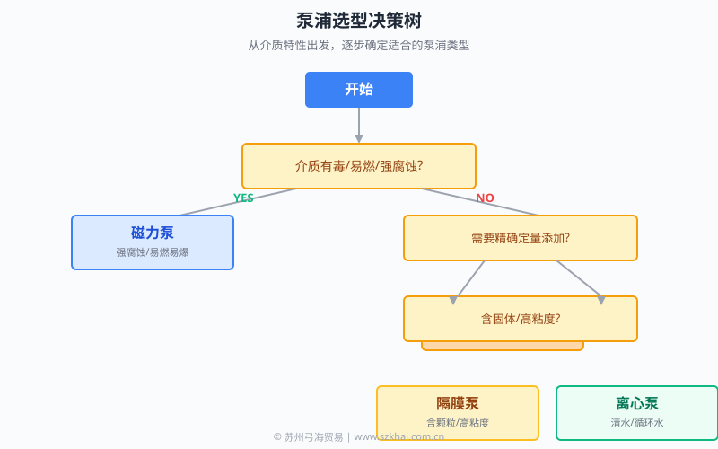

基于 40 年行业经验 · 苏州弓海贸易
从介质特性出发，逐步确定适合的泵浦类型。本指南覆盖工业流程中常用的 4 种泵浦：磁力泵、离心泵、隔膜泵、计量泵。
选型需要综合考虑介质特性、流量需求、扬程需求、温度范围、洁净度要求等因素。弓海 40 年行业经验，技术团队提供专业选型支持。
强腐蚀、易燃易爆、高纯度介质静密封，无泄漏
清水、低粘度、循环水高效率，通用性强
含固体、高粘度、危险介质良好通过性，可干运转
精确化学投加精度 ±0.5% - 1%
